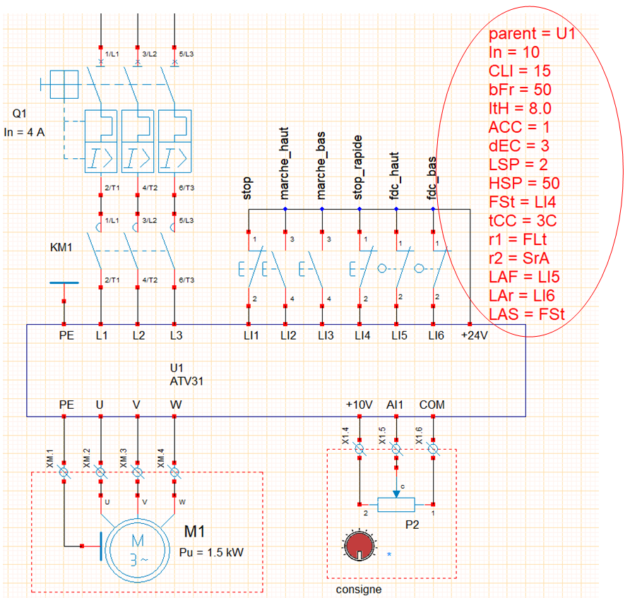

Variateur de vitesse
Préambule
WRsimulateur permet d'insérer des variateurs de vitesse dans les folios. La bibliothèque comprend actuellement des objets variateurs monophasés et triphasés type ATV31 de SchneiderElectric.
L'exemple 18-demo_variateurATV31 illustre une mise en œuvre d'un variateur ATV31 pour contrôler la vitesse de déplacement dune table mobile. 
- le variateur est attaché à une une zone texte éditée dans WinRelais qui précise son paramétrage,
- Il faut que la première ligne de la zone de texte commence avec la commande :
- parent = nom du variateur,
- cette zone texte peut-être placée librement dans le schéma,
- si la zone texte n'existe pas, le variateur est paramétré en paramétrage par défaut.
Paramètres ATV31
ATV31_programming_manual_FR_1624588_04.pdf
| Paramètre par défaut | Description |
|---|---|
| In = 10 | Calibre du variateur |
| bFr = 50 | Fréquence standard moteur [50,60] |
| ItH = 10.0 | Protection thermique du moteur [0.2 à 1.5 In] |
| CLI = 15.0 | Limitation de courant [0.25 à 1.5 In] |
| ACC = 3.0 | Temps de la rampe de d'accélération [0.1 à 3276 s] |
| dEC = 3.0 | Temps de la rampe de décélération [0.1 à 3276 s] |
| LSP = 0 | Petite vitesse [0 Hz à HSP] |
| HSP = 50 | Grande vitesse [LSP à bFR] |
| PS2 = n0 | 2 vitesses présélectionnées [n0,LI3,LI4,LI5,LI6] |
| PS4 = n0 | 4 vitesses présélectionnées [n0,LI3,LI4,LI5,LI6] |
| PS8 = n0 | 8 vitesses présélectionnées [n0,LI3,LI4,LI5,LI6] |
| SP2 = 10 | Vitesse présélectionnée 2 [0 Hz à HSP] |
| SP3 = 15 | Vitesse présélectionnée 3 [0 Hz à HSP] |
| SP4 = 20 | Vitesse présélectionnée 4 [0 Hz à HSP] |
| SP5 = 25 | Vitesse présélectionnée 5 [0 Hz à HSP] |
| SP6 = 30 | Vitesse présélectionnée 6 [0 Hz à HSP] |
| SP7 = 35 | Vitesse présélectionnée 7 [0 Hz à HSP] |
| SP8 = 40 | Vitesse présélectionnée 8 [0 Hz à HSP] |
| tCC = 2C | Commande 2fils / 3fils [2C, 3C] |
| tCt = trn | Type de commande 2fils [LEL, trn, PFO] |
| r1 = FLt | Relais r1 [n0,FLt,rUn,FtA,FLA,CtA,SrA,tSA,APL,LI1,LI2,LI3,LI4,LI5,LI6] |
| r2 = n0 | Relais r2 [n0,FLt,rUn,FtA,FLA,CtA,SrA,tSA,bLC,APL,LI1,LI2,LI3,LI4,LI5,LI6] |
| FSt = n0 | Arrêt rapide sur état logique 0 [n0, LI1, LI2, LI3, LI4, LI5, LI6] |
| LAF = n0 | Fin de course sens avant [n0, LI1, LI2, LI3, LI4, LI5,LI6] |
| LAr = n0 | Fin de course sens avant [n0, LI1, LI2, LI3, LI4, LI5,LI6] |
| LAS = nSt | Type d'arrêt en fin de course [rMP, FSt, nSt] |
| FR1 = AII | Configuration consigne 1 [AII, AI2, AI3] |
Paramètres ATV11
| Paramètre par défaut | Description |
|---|---|
| In = 10 | Calibre du variateur |
| bFr = 50 | Fréquence standard moteur [50,60] |
| ItH = 10.0 | Protection thermique du moteur [0.2 à 1.5 In] |
| CLI = 15.0 | Limitation de courant [0.25 à 1.5 In] |
| ACC = 3.0 | Temps de la rampe de d'accélération [0.1 à 3276 s] |
| dEC = 3.0 | Temps de la rampe de décélération [0.1 à 3276 s] |
| LSP = 0 | Petite vitesse [0 Hz à HSP] |
| HSP = 50 | Grande vitesse [LSP à bFR] |
| SP2 = 10 | Vitesse présélectionnée 2 [0 Hz à HSP] |
| SP3 = 25 | Vitesse présélectionnée 3 [0 Hz à HSP] |
| SP4 = 50 | Vitesse présélectionnée 4 [0 Hz à HSP] |
| Alt = 5U | Configuration entrée analogique [5U, 10U, 0A, 4A] |
| ACt = 2C | Commande 2fils / 3fils [2C, 3C] |
| tCt = trn | Type de commande 2fils [LEL, trn, PFO] |
| rrS = n0 | Sens arrière [n0,LII,LI2,LI3,LI4] |
| LIA = n0 | Affectation de l'entrée LIA [n0,LII,LI2,LI3,LI4] |
| LIb = n0 | Affectation de l'entrée LIb [n0,LII,LI2,LI3,LI4] |
| dO = n0 | [n0, 0Cr, rFr, FtA, SrA CtA] |
| Ftd = 50 | Seuil de fréquence (0 à 200 Hz) |
| Ctd = 10 | Seuil de courant [0 à 1.5 In] |